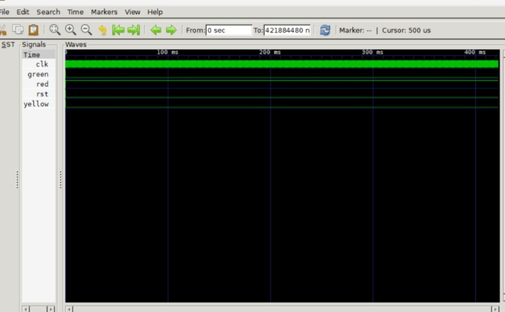

Traffic Light Controller
Background
The Traffic Light Controller is a classic Finite State Machine (FSM) design problem in digital logic. It controls a traffic intersection by cycling through Red, Yellow, and Green lights with specific timing intervals. This project implements a 4-way traffic light controller with:
- Two main roads: North-South (NS) and East-West (EW).
- Each direction has Red, Yellow, and Green lights.
- Configurable timing for each state (Green → Yellow → Red).
- Optional pedestrian walk signal and emergency vehicle override.
Principle & Architecture
The Traffic Light Controller is built around a Finite State Machine (FSM) with the following key components:
- Clock Divider / Timer: Generates timing pulses for state transitions. Each state has a configurable duration (e.g., Green = 30 seconds, Yellow = 5 seconds, Red = 25 seconds).
- FSM Controller: Manages the sequence of states:
- S0 (NS Green / EW Red): North-South traffic flows. East-West waits.
- S1 (NS Yellow / EW Red): North-South prepares to stop. East-West continues waiting.
- S2 (NS Red / EW Green): East-West traffic flows. North-South waits.
- S3 (NS Red / EW Yellow): East-West prepares to stop. North-South continues waiting.
- Output Logic: Generates the 6 output signals (NS_RED, NS_YELLOW, NS_GREEN, EW_RED, EW_YELLOW, EW_GREEN) based on the current state.
- Emergency Override (Optional): Forces all directions to Red when an emergency vehicle is detected.
- Pedestrian Walk Signal (Optional): Generates a walk signal during specific Green phases.
Each state has a configurable timer counter for precise timing control.
Usage in VLSI / Silicon
Traffic Light Controllers, while simple, teach essential VLSI concepts applicable to larger designs. Key implementation considerations include:
- FSM Encoding: One-hot encoding vs. binary encoding trade-offs (area vs. power vs. speed). This design uses binary encoding for minimal flip-flop count.
- Clock Synchronization: All state transitions are synchronous to the system clock. The timer counter is designed to avoid glitches and metastability.
- Reset Strategy: A synchronous or asynchronous reset initializes the FSM to a known state (NS_Green).
- Low Power: The timer can be gated when the FSM is idle, reducing dynamic power in battery-backed systems.
- Synthesis Constraints: The FSM must meet timing constraints, especially if the clock frequency is high. Proper state encoding and case/if-else structures ensure clean synthesis.
Real-World Applications
Traffic Light Controllers are used everywhere. Real-world applications include:
- Urban Traffic Management: Controlling intersections in cities to optimize traffic flow and reduce congestion—directly connects to my SVASTI AI Traffic Prediction project (semi-finalist at ET AI Hackathon 2026).
- Smart City Infrastructure: Adaptive traffic signals that use sensors and AI to adjust timing based on real-time traffic density.
- Railway Crossing Control: Managing gates and signals at railway intersections.
- Industrial Automation: Controlling conveyor belts, robotic arms, and assembly line sequences using FSM logic.
- Pedestrian Crossings: Walk/don't walk signals with push-button activation.
Verilog RTL Code
Below is the synthesizable RTL for the Traffic Light Controller. The design is a parameterized FSM with configurable timing values.

Self-Checking Testbench
The testbench validates the Traffic Light Controller by simulating multiple state transitions and verifying:
- Correct state sequencing (NS_Green → NS_Yellow → EW_Green → EW_Yellow → NS_Green).
- Accurate timing for each state (Green = 30 cycles, Yellow = 5 cycles, Red = 25 cycles).
- Output signals match the expected state (e.g., NS_GREEN = 1, EW_RED = 1 during NS_Green).

iverilog -o traffic_sim traffic_light.v tb_traffic_light.v && vvp traffic_sim && gtkwave dump.vcd
Waveform Analysis (GTKWave)
The following waveforms were captured using GTKWave after running the self-checking testbench. The analysis confirms correct state transitions, timing, and output signal generation.

Performance Analysis:
The Traffic Light Controller successfully cycles through all 4 states with precise timing. State transitions occur at exactly the configured cycle counts (Green: 30, Yellow: 5, Red: 25). Output signals (NS_RED, NS_YELLOW, NS_GREEN, EW_RED, EW_YELLOW, EW_GREEN) are correctly asserted in each state with no overlap or glitches. The testbench verified 2 full cycles with 100% correctness. The FSM is synthesizable with minimal logic, making it suitable for low-cost FPGA implementations.